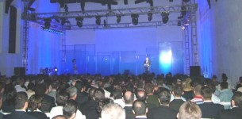

|
VÝKO
A.Þ., adýný mitolojideki ýþýk ve aydýnlýk kavramlarýna dayandýran
"Thea" ürün ailesini Yýldýz Sarayý Þale Köþkü'nde düzenlenen
bir dizi aktivite ile kamuoyuna tanýttý. Sektörde yer alan
tasarýmcý ve firmalarýn yanýsýra kullanýcýlarýn da yer aldýðý
seçkin bir davetli topluluðun katýldýðý tanýtým toplantýsýnda
konuþma yapan VÝKO Ýcra Kurulu Baþkaný Cahit Durmaz,
Thea ile yaþam alanlarýnýn dekorasyonunda ayrýlmaz bir parça
olmayý hedeflediklerini söyledi. Elektrik ürünleri ile 25
yýlda Türkiye ve dünyada geniþ kitlelere ulaþtýklarýný belirten
Durmaz, "Thea, Akýllý Ev Teknolojileri'ne yönelik atacaðýmýz
adýmlarýn baþýnda geliyor, önümüzdeki dönemde ise ev elektroniðinin
deðiþmez isimleri arasýnda yer alacaðýz. Fonksiyonel tasarým
ve markamýzla bu yerimizi vazgeçilmez kýlacaðýz" þeklinde
konuþtu.
Tanýtým
sýrasýnda, 15 kiþilik VÝKO tasarým ve Ar-Ge ekibiyle birlikte
gerçekleþtirilen bu projede çizgileriyle "Thea"
ya hayat veren dünyaca ünlü Türk tasarýmcý Mirzat Koç
söz alarak Thea'nýn tasarým macerasýný anlattý; Bir endüstriyel
tasarýmcý olarak ilk defa böyle bir ürün tasarladýðýný belirten
Koç, tasarýma baþlarken, insanlarýn çok sýk kullandýklarý
halde bu ürünle aralarýndaki iliþkiye önem vermediklerini
farkettiðini, bunun üzerine detaylarýyla kullanýcýsýna gerekli
olan fonksiyonu saðlarken kullanýlmadýðý zamanlarda da varlýðýný
belli eden bir tasarým yapmaya çalýþtýklarýný söyledi.
Mirzat
Koç, düðmeli ürünlerin iki yanýnda bulunan mavi kelebek ýþýklarýn
"karanlýkta olmayan hayatý yaþanýr hale getirmeyi amaçlayan
bir vurgu" olduðunu belirtti. Kendisi için bir ürünü
dokunarak tasarlamanýn çok önemli olduðunu belirten Koç, kullanan
için de satan için de gurur duyacaklarý bir ürün geliþtirmeyi
ve "Thea" ismini bir Dünya markasý haline getirmeyi
hedeflediklerini söyledi.
|

|
|
|
|
"Thea"
ürün ailesinin tanýtýmý Yýldýz Sarayý Þale Köþkü'nde
yapýldý
|
Mirzat
Koç
|
Cahit
Durmaz ve Mirzat Koç
|
"Thea"nýn
müþteri odaklý tasarýmý ödül de aldý
Kamuoyu
ve sektörel araþtýrmalar sonucu yoðun bir tasarým sürecinin
ürünü olarak doðan "Thea" ailesine, müþterilerden gelen taleplere
göre özel ve fonksiyonel ürünler eklenmiþtir. Anahtar kapalý
konumuna getirildiðinde þebeke geriliminde oluþacak yüksek
gerilimi sönümleyerek, gözün algýlayamayacaðý þekilde artan
bir þiddette gereken gerilimi ýþýk sistemine ulaþtýran "Gecikmeli
Anahtar" ve anlýk dokunma ile tek bir temasta kontrol saðlayan
"Dokunmatik Dimmer" bu ürünlerden bazýlarýdýr.
Estetik
ve mekanik anlamda farklý ve fonksiyonel bir ürün olarak tasarlanan
"Thea", mavi ýþýklý özel aydýnlatmasý, yüzen anahtar yapýsý
ve incelikle düþünülmüþ daha birçok tasarým öðesiyle 29 renk
seçeneðini bir arada sunuyor.
Kendi
kendine kapanan gecikmeli anahtardan, dijital müzik anahtarýna
kadar tam 48 farklý ürünü bünyesinde barýndýran "Thea", yaygýn
kullanýlan muadil ürünlere alternatif oluþturabilmek için
sistemli ve bilinçli olarak yürütülen Ar-Ge çalýþmalarý, bu
çalýþmalarýn ürüne görsel ve teknolojik olarak baþarýyla yansýtýlmasý,
ürünün yerli kaynaklar kullanýlarak üretilmesi, ürünün yaygýn
kullanýlan, ancak daha önce bu amaçla biraraya getirilmemiþ
teknolojileri baþarýyla bünyesinde buluþturmasý nedeniyle,
"Thea", Uluslararasý Yapý 2005 Fuarý'nda "Altýn Çekül Teþvik
Ödülü"nü de kazandý.
Mavi
Kelebek Iþýk, Tornavidasýz Montaj ve Üst Düzey Güvenlik
Mekanizmaya
konumlandýrýlan mavi renkli led'ler sayesinde anahtar sistemi
kullanýlmadýðýnda, mavi led devresinin açýlmasý ile anahtarýn
karanlýk ortamlarda kolaylýkla tespit edilmesini saðlayan
bu sistem, ayný zamanda bulunduðu ortama hoþ ve dekoratif
bir görsellik de katýyor. Mavi kelebek ýþýklar, "Thea"nýn
görsel farklýlýklarýnýn en göze çarpaný... Malzeme ve renk
olarak 29 alternatif ürün sunan "Thea"nýn çerçeve uygulamasýnda,
"Zamak 5" olarak adlandýrýlan bir malzeme ile döküm kalýplama
imalat sistemi kullanýlmýþ ve mat, parlak, naturel ve fýrçalý
tiplerde farklý kaplamalar tercih edilmiþtir.
Beyin fýrtýnasý - kavramsal çalýþmalar safhasýnda
yapýlan ilk eskizlerden bir örnek. Mirzat Koç, 24 Kasým 2003
"Thea",
tüketiciye montaj aþamasýnda birbirinden özel kolaylýklar
sunarak, tornavida kullanýmýný tamamen ortadan kaldýrýr. Çabuk
baðlantýlý kontak sisteminin kullanýldýðý "Thea"da, alt mekanizmadaki
mandallara bastýrýlmasýyla kablo giriþi yapýlarak, mandallarýn
býrakýlmasý ve böylece yayýn kabloyu sýkmasý saðlanmaktadýr.
"Thea"nýn duvara montajý ve demontajý için de tüketiciye pratik
çözümler sunulmuþtur. Mekanizmanýn duvara tespiti doðrudan
gövde yapýsý içinde bulunan týrnaklarýn montaj amaçlý vidalarýnýn
sýkýlmasý ile gerçekleþmekte, üst grubun alt mekanizma yapýsýna
montajý da vida kullanýlmadan, týrtýklý geçme sistemi ile
saðlanmaktadýr. Sac aksam, karkas ve týrnak parçalarda sac
malzeme kullanýlarak, dünya çapýnda ilk kez bu sektörde uygulanan
kataforez kaplamadan yapýlmýþtýr.
Ürün
belgeleri ve logo çalýþmalarý karkaslarýn üzerine Türkiye'de
bu sektörde ilk kez kullanýlan NO:YAG Laser ile yazýlmaktadýr.
Plastik aksamlarda, kapak ve düðmelerde halojen free özelliði
olan malzemeler kullanýlmaktadýr. Çevre dostu olan "Thea"nýn
renklendirilmesinde de su bazlý boya kullanýlarak, günümüz
moda renkleri ve renk kombinasyonlarý uygulanmaktadýr. Alt
mekanizmalarda temel fonsiyonellik ve emniyet kriterleri uygulanýrken
özellikle estetik olarak parçalar arasýnda uyuma, renk uygulamasýna,
form görselliðine özen gösterilmektedir.
Anahtar
Düðmeli ürünlerin kullanýmýnda sesi azaltmak amacýyla anahtar
yapýsýnda özel bir tasarým yaparken, özellikle priz ürünlerin
tümünde çocuk koruma sistemi kullanýlmaktadýr. Tasarým çalýþmalarý
bir buçuk yýl süren "Thea", üretim verimliliðinin arttýrýlmasý
amacýyla DFM (Design For Manufacturing - Üretim Ýçin Tasarým)
kavramý ile geliþtirilmiþtir.
Kavramsal
tasarým aþamasýndan prototiplere varýncaya kadar yaklaþýk
4-6 aylýk uzun bir çalýþmanýn ardýndan, Nisan 2004'te Frankfurt'taki
"Light and Building" fuarýnda ilk kez tüketicilere sunularak
büyük beðeni kazanan "Thea", uluslararasý "VDE-NF-KEMA" ürün
standartlarýna uygundur.
TS
4915 EN 60669-1 standardý kapsamýnda bulunan "Thea", aralýksýz
olarak 9 gün süren 400 bin teste tabi tutularak standartlara
uygunluðu doðrulanmýþtýr.
VÝKO
Hakkýnda
Sektöründe
Türkiye'nin lider kuruluþlarýndan olan VÝKO, 1980 yýlýnda
Cahit Durmaz ve Ali Daðbaþý tarafýndan kurulmuþtur.
Yýllýk 60.000.000 Adet anahtar ve priz üretim kapasitesi ile,
grup priz serileri, aksesuarlar, aydýnlatma armatürleri, sigorta
kutularý, elektronik-elektrik sayaçlarý ve merdiven otomatikleri
üretmektedir.
Ýstanbul/Samandýra'da
12.000 m2 arazi içerisinde, 25.000 m2 kapalý alana sahip modern
fabrika binasýnda 500 kiþilik çalýþaný ile faaliyet gerçekleþtiren
VÝKO, 53 dönümlük yeni endüstri tesislerine önümüzdeki dönemde
geçmeyi planlamaktadýr.
VÝKO
ürünlerinin %45' ini yurtdýþýna, 47 ülkeye ihraç etmektedir.
VÝKO gerek ulusal ve gerekse uluslararasý pazarda elektrik
enerjisinin aktarýlmasý, kullanýlmasý, daðýtýlmasý ve daha
kolay sunum ortamýna iliþkin ihtiyaçlarýn karþýlanmasý amacýyla
tasarýmdan üretime ve ürünlerin kullanýmý süresince verilen
hizmetlere kadarki tüm aþamalarda müþterilerine en üstün kaliteyi
saðlamaktadýr.
Firma,
1998 yýlýnda Kalite Yönetim Sistemi'ni kurmuþ, 2002 yýlýnda
ISO 9001:2000 belgesi almýþtýr.
Ulusal
Kalite Baþarý Ödülü Bu Yýl Viko'nun (18 Kasým 2005)
Türkiye Kalite Derneði (KalDer) tarafýndan bu yýl 13.'sü düzenlenen
"Ulusal Kalite Ödülleri" organizasyonunda ödüle
lâyýk görülen kuruluþlar, "Ulusal Kalite Kongresi"nin
ikinci günü akþamý Lütfi Kýrdar Kongre ve Sergi Sarayý'nda
düzenlenen Ödül Töreni'nde açýklandý; Büyük Ölçekli Ýþletmeler
dalýnda finale kalan Viko "Ulusal Kalite Baþarý Ödülü"nün
sahibi oldu. Viko Yönetim Kurulu Üyesi Haluk Ziya Türkmen
"Ulusal Kalite Baþarý Ödülü"nü Kalder Yönetim Kurulu Baþkaný
Hasan Subaþý'dan teslim aldý.
Daha
fazla bilgi için:
|